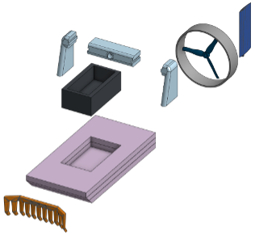
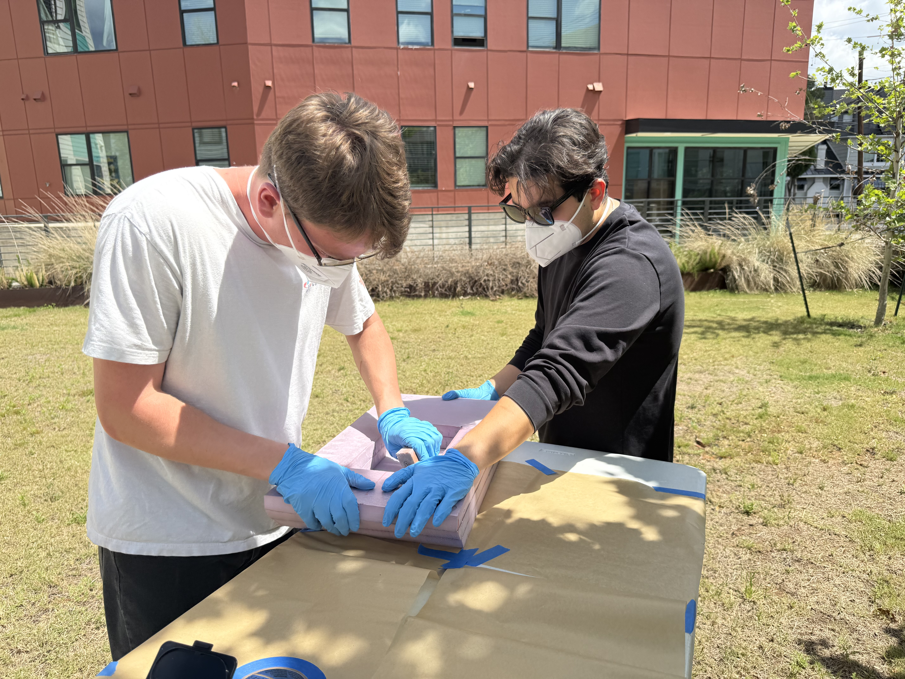
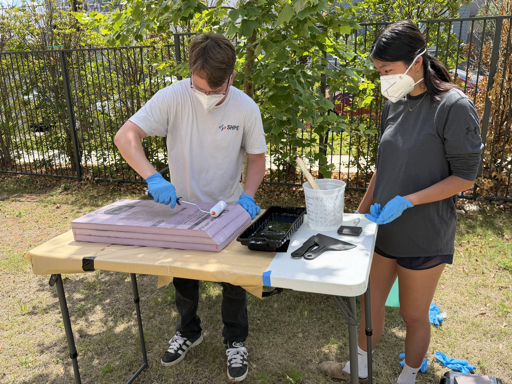
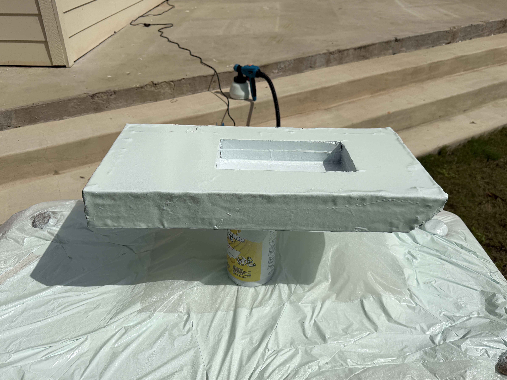
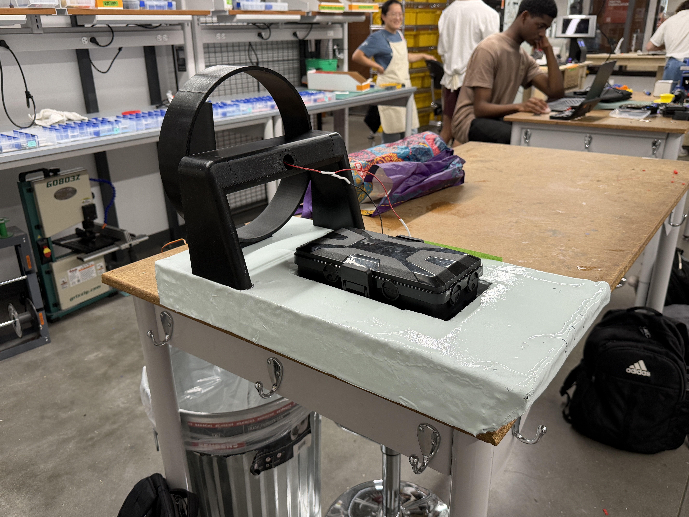
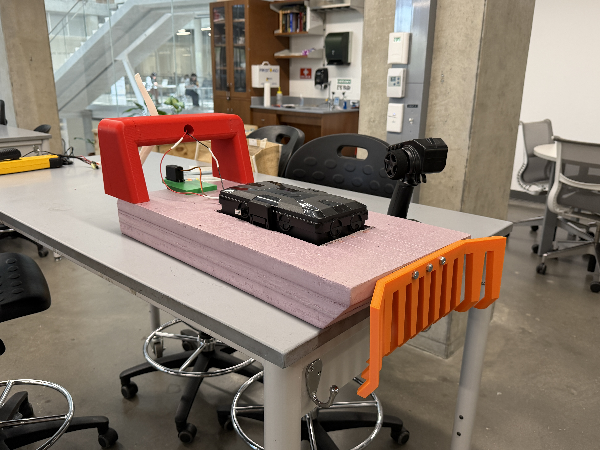
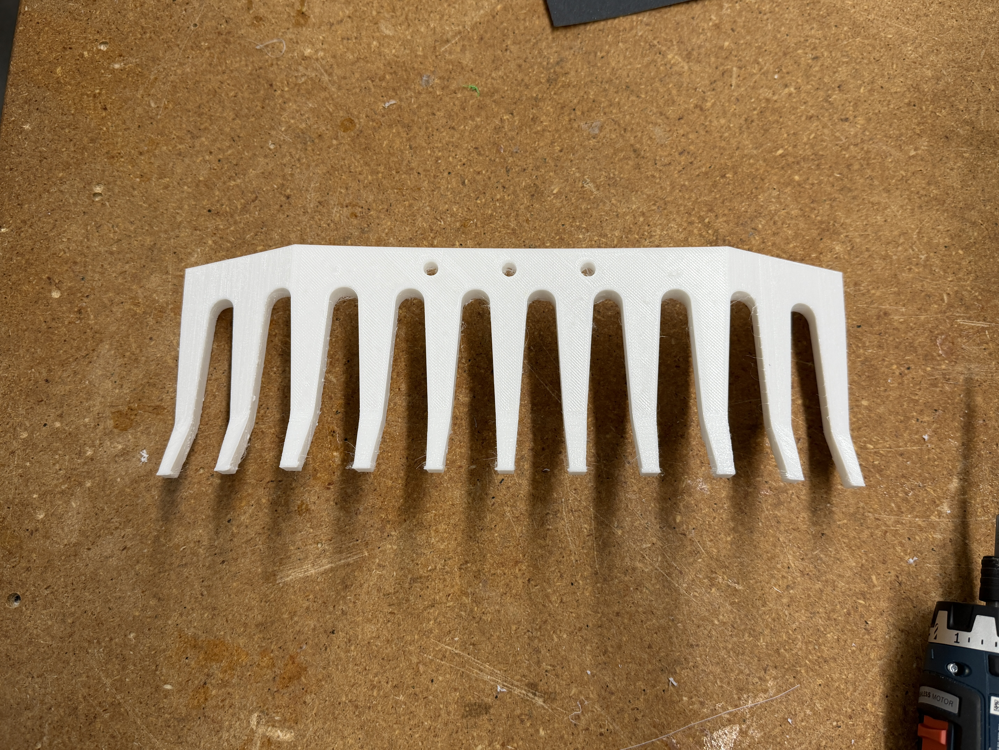
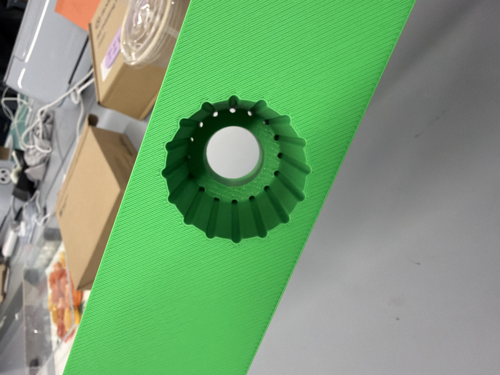
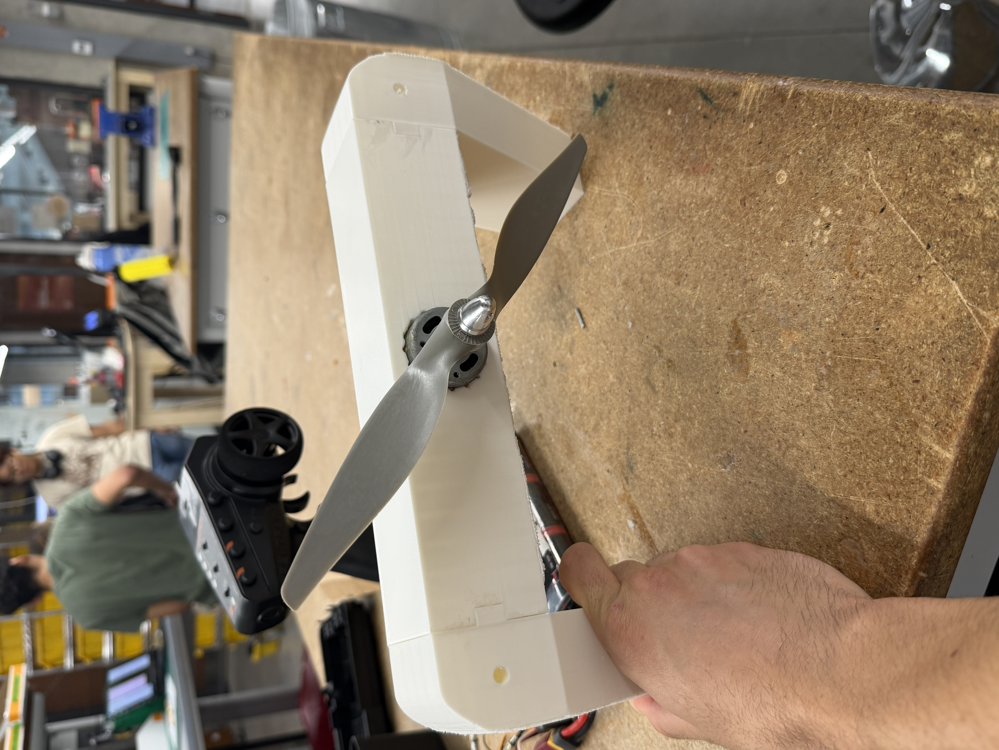

Overview
Lady Bird Lake and Lake Austin collect plastic litter and tire-wear particles from urban runoff, storm drains, and creeks. The hardest spots to reach (shallow vegetated shorelines under bridges and brush) are exactly where debris piles up, and existing cleanup boats can't maneuver there safely. Recent UT Jackson School research has shown microplastic concentrations in Lady Bird Lake sediments are rising, and most microplastic begins as larger plastic that breaks down over time, so intercepting macroplastic upstream prevents future microplastic.
Our Lake Guardians team set out to design and build a small, deployable system that can reach those pockets, corral floating plastics, and hand debris off to existing volunteer crews instead of replacing them. Over two semesters we treated this as a full design-methodology case study and walked it all the way to a working physical prototype: The SS Guardian, a $200 remote-controlled airboat with a flexible front rake.
Design Methodology
This project is less about a single cool prototype and more about executing the design process correctly end-to-end. We:
- Conducted solution-neutral interviews with Austin Watershed Protection, the City of Austin, and UT research groups, then converted raw quotes into interpreted needs, engineering requirements, and ranked specifications
- Built a House of Quality that benchmarked Mr. Trash Wheel, StormX Netting Trap, and Seabin, then used that to set target metrics for capture performance, ecological safety, and ease of maintenance
- Used function decomposition to break "remove plastics from lakes" into eight primary functions like intercepting floating plastics, protecting wildlife, retaining debris, enabling modular deployment, and informing the public
- Ran multiple ideation methods (6-3-5 brainwriting, design-by-analogy, SCAMPER) and captured those ideas in a morphological matrix and five fully defined concept variants
- Evaluated concepts with rotating-datum Pugh charts, backed by quick back-of-the-envelope calculations for throughput, capacity, cost, and maintainability
The outcome was a clear, defensible choice: an airboat concept that balanced plastic removal, wildlife safety, cost, and maintainability better than drones, net guns, floating channels, or hand tools.
Final Design: The SS Guardian
The final system is a small airboat that pushes trash instead of sucking water. The entire drivetrain stays above the waterline so vegetation can't jam it and wildlife can't be hit:
- Hull: 24" XPS foam core with a fiberglass + epoxy skin, sized for a 1" draft and 3 kg loaded weight. Stable, portable, and cheap to build with student-shop materials.
- Above-water propulsion: a 10×7 nylon prop in a 3D-printed shroud, driven by a brushed motor on a tabbed spoiler mount. No submerged drivetrain.
- Front rake: a one-piece TPU rake spans the bow and flexes around brush instead of snagging on it, a direct response to PLA prototypes that snapped at the seam.
- Steering: a servo-driven air rudder mounted in the prop wash, responsive down to under 0.5 m/s.
- Electronics: 7.2V battery pack, ESC, 2.4 GHz RC receiver, single steering servo. No tether.

Build & Fabrication
Spring 2026 was about turning the CDR design into a real boat. The hull was hand-built from a stack of XPS sheets, hot-wire shaped, wrapped in fiberglass, and finished with foam-safe epoxy and waterway-safe paint. The shroud, spoiler, rudder, and servo mount were FDM-printed in PLA; the rake was printed in TPU to give the teeth the flex they needed against vegetation.




Test-Driven Iteration
Three subsystems went through visible "fail and re-design" loops between the TRR and FDR. Each iteration was driven by a specific failure mode we observed in benchtop testing:
- Motor mount. The first PLA spoiler split along its layer lines and the press-fit prop slipped under load. The fix was a 3-piece tabbed spoiler with a collet-mounted nylon prop, which held torque cleanly.
- Rake. A two-piece PLA rake snapped at the seam the first time it hit brush. The replacement is a one-piece TPU rake that flexes around obstacles instead of breaking.
- Rudder. An early water rudder bent the servo arm at speed. We upsized to an air rudder in the prop wash and corrected the print orientation so the rudder loads went into the stronger axis.




Design for Manufacturing & Assembly
A big chunk of this project was learning to design for the shop we actually have, not the shop we wish we had. DFMA heuristics drove a lot of the late-semester CAD revisions:
- Manufacturing: re-built the hull around flat XPS sheets and simple 2D cuts; converted the rake from many unique tines into a single TPU print; selected common materials (foam, plywood, PVC, aluminum) that can be sourced and machined in student shops.
- Assembly: reduced part count, consolidated bolt sizes, and added self-locating features and press-fit interfaces so the boat can be assembled top-down with simple hand tools.
- Documentation: created assembly drawings, an assembly plan, and a BOM that someone else could realistically follow without the whole design report as a crutch.
Results
The final boat hits the targets we set in the House of Quality at the start of Fall 2025:
- Cost: ~$200 build (target <$250)
- Top speed: 1.2 m/s on flat water
- Draft / payload: 1" draft at 3 kg loaded
- Runtime: 20 to 30 min on a 7.2V pack
- Thrust margin: ~24 N thrust vs. ~7.5 N hull drag at 1 m/s, about a 3× thrust-to-drag margin, which is what gave us the head-room to add the rake without losing controllability
- Deployability: two people, under two hours, no tether
Honest limits: the SS Guardian has a small payload and still needs an operator. It's a complement to industrial interceptors like Mr. Trash Wheel and autonomous skimmers like WasteShark, not a substitute. It earns its place by going the one place those bigger systems can't: into the brush.
Responsibilities & What I Learned
I owned the design-methodology workstreams across both semesters and led the DFMA pass on the hull and rake. Specific things I learned to do well on this project:
- Design process discipline: keeping the work traceable from customer quotes to interpreted needs to engineering specs to design artifacts (function tree, HoQ, morph matrix, Pugh charts) to a defensible final concept.
- Risk-aware design: using FMEA as a real design tool rather than a checkbox, then folding those risks back into geometry changes, enclosure decisions, and control-system failsafes.
- DFMA mindset: simplifying geometry, standardizing parts, and choosing fasteners and interfaces so that volunteers, not just engineers, can assemble and maintain the system.
- Project planning: maintaining the Gantt chart and task list, breaking ambiguous deliverables into concrete tasks, and keeping our work aligned with the course milestones and the two-semester roadmap.
- Communicating decisions: packaging all of this into clear reports, presentations, and a poster so faculty, stakeholders, and future teams can understand why we chose an airboat, how it meets specs, and where to iterate next.
What's Next
The SS Guardian leaves a clear roadmap for future cohorts. The highest-value upgrades are:
- Brushless drivetrain to extend runtime and improve efficiency
- Fine-mesh shroud to capture trash under low-hanging brush
- Twin rudders on a second servo for tighter turning
- Longer hull for greater payload capacity
- Stiffer rake variant for heavier debris loads
- Higher-capacity battery for longer cleanup runs
More than a single prototype, this project leaves behind a repeatable methodology: a cheap, manufacturable, environmentally honest piece of hardware built end-to-end from stakeholder interviews to a tested boat, with a clear evidence trail of every decision in between.